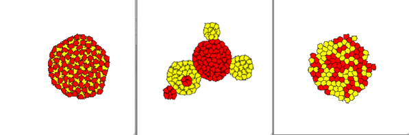
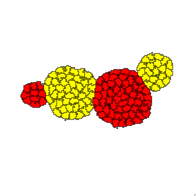

In an attempt to answer the question, "how fast/slow is CC3D; how does it compare to similar tools?", we must first find a "similar tool" with which to compare. One such tool is the TST (Tissue Simulation Toolkit). After downloading and installing TST, we begin to appreciate some of the difficulties in trying to compare CC3D and TST. Both C++, but ...; graphics; extensibility; interactivity.
After successfully building TST, one can run:
sorting sorting.par
where sorting.par contains all necessary parameters (Cellular Potts, PDE, initial conditions, output) for a simulation. One such Cellular Potts parameter, Jtable, is a file name which contains additional parameters. The following images show snapshots resulting from runs using the provided files, Jpepperandsalt.dat, Jsorting.dat, Jnoadhesion.dat, respectively.
After some time, the sorting (middle) simulation looks like:
Back to index